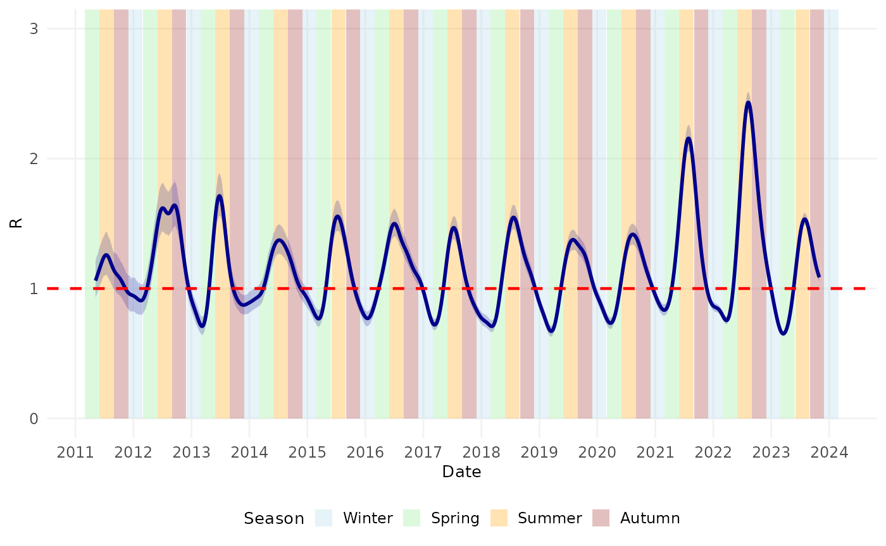
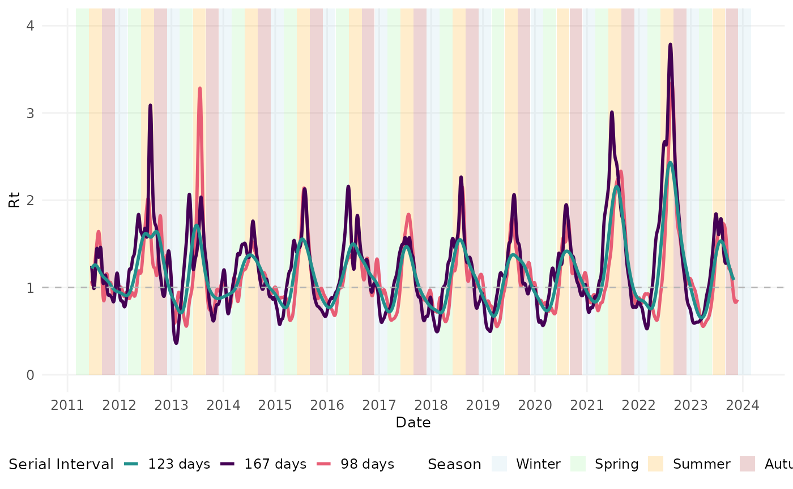
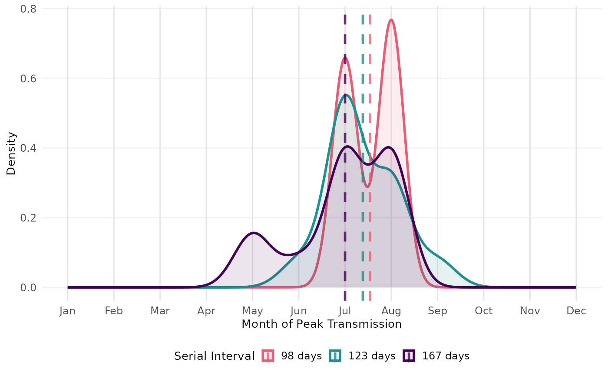

Reproduce Results from Ainslie et al.
Kylie Ainslie
2025-10-03
Source:vignettes/articles/reproduce_results_ainslie_et_al.Rmd
reproduce_results_ainslie_et_al.RmdIntroduction
This article provides the code necessary to reproduce the results
from Ainslie
et al. 2025. Briefly, the article demonstrates how key
epidemiological characteristics of scabies were estimated. Specifically,
the article shows how to estimate 1) the serial interval using a method
developed by Vink et
al. by applying mitey::si_estim() to time series of
symptom onset date data from scabies outbreaks; 2) the growth rate from
annual scabies incidence from 2011 to 2023 in the Netherlands; 3) the
basic reproduction number; and 4) time-varying reproduction number using
a method developed by Wallinga and
Lipsitch by applying mitey::wallinga_lipsitch() to data
on the number of scabies consultations each week in the Netherlands from
2011 to 2023. To our knowledge, this is the first study to estimate
these quantities for scabies; however, the methods demonstrated here can
be applied data sources describing the spread of other infectious
diseases.
Scabies is a neglected tropical disease caused by the mite Sarcoptes scabiei that affects approximately 400 million people worldwide annually. While historically a common affliction in Europe in the late 1800s and early 1900s, incidence declined significantly after World War II. However, recent years have witnessed a concerning resurgence of scabies across Western Europe, potentially increasing the burden on healthcare systems. Despite its considerable impact, fundamental aspects of scabies transmission dynamics remain poorly understood, making epidemiological analyses like those presented in this vignette critically important for informing public health responses.
This article is divided into Methods and Results. In the Methods section, the code to perform the analyses is demonstrated. In the Results section, we will show how to produce the figures and tables seen in the manuscript.
Methods
Serial Interval
The following code estimates the serial interval distribution for
scabies from outbreak data18–21. First, we load the dataset
containing index case-to-case (ICC) intervals from four studies
(vignettes/data/si_data.rds). We then apply the method
developed by Vink et al.22 to
estimate the mean and standard deviation of the serial interval,
assuming a Normal distribution. Finally, we restructure the results for
easier analysis and visualization.
# read in data
si_data <- readRDS("../data/si_data.rds")
# use method from Vink et al. to estimate SI for each study
# assume a Normal distribution, then do some wrangling
result_norm <- si_data %>%
select(icc_interval, study) %>%
group_by(study) %>%
summarise(result = list(si_estim(icc_interval))) %>%
mutate(
mean = map_dbl(result, "mean"),
sd = map_dbl(result, "sd"),
wts = map(result, "wts") # Store wts as a list-column
) %>%
select(-result) %>%
unnest(wts) %>% # Unnest the wts column if needed %>%
pivot_longer(
cols = c(mean, sd, wts),
names_to = "statistic",
values_to = "value"
) %>%
group_by(study, statistic) %>%
mutate(
occurrence = row_number(),
statistic = if_else(statistic == "wts", paste0("weight_", occurrence), statistic)
) %>%
filter(statistic != "mean" | occurrence == 1) %>%
filter(statistic != "sd" | occurrence == 1) %>%
select(-occurrence) %>%
ungroup()
# Reshape results from long to wide format
result_norm_wide <- result_norm %>%
pivot_wider(
names_from = statistic,
values_from = value
)The code above groups the data by study, applies the si_estim() function to each group, and extracts the estimated mean, standard deviation, and weights. These weights represent the probabilities of different transmission routes (co-primary, primary-secondary, etc.). The resulting data frame contains all necessary parameters for plotting the serial interval distributions in the Results section.
Meta-analysis
To combine estimates from multiple studies, we perform a Bayesian
meta-analysis using the following steps: First, we merge the estimated
parameters with the original data. Then, we prepare a data frame with
means, standard deviations, and standard errors for each study. Finally,
we fit a Bayesian random effects model using the brms
package23 with appropriate
priors.
# merge si_data and result_norm_wide for plotting
df_merged <- si_data %>%
select(study, icc_interval) %>%
left_join(result_norm_wide, by = "study", relationship = "many-to-many")
# Perform a Bayesian meta-analysis
df_ma <- df_merged %>%
group_by(study) %>%
mutate(n = n()) %>%
slice(1) %>%
ungroup() %>%
mutate(se = sd/sqrt(n)) %>%
select(study, n, mean, sd, se)
# we will perform a Bayesian meta-analysis using the {brms} package
# specify priors
priors <- c(prior(normal(100,50), class = Intercept),
prior(cauchy(0,1), class = sd))
# Fit a random effects model
m.brm <- brm(
mean | se(se) ~ 1 + (1 | study),
data = df_ma,
prior = priors,
iter = 8000,
warmup = 4000,
control = list(adapt_delta = 0.999, max_treedepth = 20)
)This code creates a hierarchical model where study-specific means are
treated as random effects around a global mean. The prior()
function specifies our prior beliefs about the pooled mean (normal
distribution centered at 100 days) and between-study heterogeneity
(Cauchy distribution). The model is fitted with 8,000 iterations (4,000
for warmup) and adjusted control parameters to ensure stable MCMC
sampling.
Growth Rate and Basic Reproduction Number ()
Growth Rate
To estimate the growth rate of scabies cases, we fit a generalized linear model (GLM) with a log link and quasipoisson error structure to account for overdispersion in the count data. The following code loads annual incidence data, prepares it for modeling, fits the exponential growth model, and calculates confidence intervals for both the model parameters and fitted values.
# read in data set
file_path <- system.file("extdata", "data/scabies_data_incidence_yearly.xlsx",
package = "mitey")
scabies_inc_total <- read.xlsx(file_path, sheet = "total")
# some data wrangling to make the column names nicer
scabies_inc_total <- scabies_inc_total %>%
rename(inc = `Inc.per.1.000`) %>%
mutate(cases = as.numeric(inc),
time = Year) %>%
select("time", "cases")
scabies_inc_total <- scabies_inc_total %>%
filter(!is.na(cases) & !is.infinite(cases) & !is.na(time) & !is.infinite(time))
# Fit an exponential model with Poisson errors
poisson_model <- glm(cases ~ time,
family = quasipoisson(link = "log"),
data = scabies_inc_total)
# Calculate 95% confidence intervals for the model parameters
ci_coeff <- confint(poisson_model)
## Fit to the original data ##
# Calculate the fitted values on the linear scale (log scale)
fitted_values_log <- predict(poisson_model, newdata = scabies_inc_total, type = "link")
# Get the standard errors of the fitted values
se_fitted_log <- predict(poisson_model, newdata = scabies_inc_total, type = "link", se.fit = TRUE)$se.fit
# Get the dispersion parameter (phi) from the quasipoisson model
phi <- summary(poisson_model)$dispersion
# Adjust the standard errors by the dispersion parameter
se_fitted_log_adjusted <- se_fitted_log * sqrt(phi)
# Calculate the confidence intervals for the fitted values on the log scale
alpha <- 0.05
z_value <- qnorm(1 - alpha / 2) # Z-value for 95% CI
lower_log <- fitted_values_log - z_value * se_fitted_log_adjusted
upper_log <- fitted_values_log + z_value * se_fitted_log_adjusted
# Add these confidence intervals to the data frame
scabies_inc_total$fitted <- exp(fitted_values_log)
scabies_inc_total$lower_fitted <- exp(lower_log)
scabies_inc_total$upper_fitted <- exp(upper_log)The code first extracts fitted values on the log scale, then calculates standard errors adjusted by the dispersion parameter to account for overdispersion. We then compute confidence intervals on the log scale and transform back to the original scale using the exponential function. This approach ensures appropriate uncertainty representation in our incidence projections.
Basic Reproduction Number ()
Using the estimated annual growth rate, we can estimate the basic reproduction number as , where is the annual growth rate, is the mean generation time (in years), and is the variance of the generation time distribution24. We assume that nearly everyone exposed has not been previously infected.
Time-varying Reproduction Number
Estimating the time-varying reproduction number begins with preparing the daily incidence data. Since the available data consists of weekly consultation counts, we distribute these counts across the days of each week using random assignment. This approach creates a daily time series while preserving the weekly totals. Since scabies is very hard to diagnose prior to symptom onset25, and scabies consultations are captured as part of sentinel surveillance based on GP consultations26, we use the date of consultation rather than the date of symptom onset.
# read in consultations data
file_path2 <- system.file("extdata", "data/scabies_data_consultations_weekly.xlsx",
package = "mitey")
nivel_wkly_data <- read.xlsx(file_path2) %>%
# fix/translate variable names
rename(diagnosis_code = `Diagnose.(ICPC)`,
year = `ISO-jaar`,
week_num = `ISO-weeknr.(ma-zo)`,
pop_size = `Aantal.populatie`,
cases = `Aantal.prevalente.cases`,
prev_per_100000 = `Prevalentie.per.100.000`) %>%
# drop diagnosis var
select(-diagnosis_code) %>%
# create new var that combines year and week
mutate(yr_wk = paste(year, week_num, sep = "_"),
year = as.factor(year))
nivel_daily_data <- nivel_wkly_data %>%
uncount(cases) %>% # Repeat rows based on the number of cases
mutate(
iso_week = paste0(year, "-W", sprintf("%02d", as.numeric(week_num))),
first_day = ISOweek2date(paste0(iso_week, "-1")),
random_day = sample(0:6, n(), replace = TRUE),
onset_date = first_day + days(random_day)
) %>%
select(-iso_week, -first_day, -random_day)
# Group data by onset_date and calculate the daily incidence
df <- nivel_daily_data %>%
group_by(onset_date) %>%
mutate(count = n()) %>%
distinct(onset_date, count) %>%
arrange(onset_date) %>%
mutate(num_date = as.numeric(onset_date)) %>%
ungroup() %>%
rename(inc = count) %>%
select(onset_date, inc)The code above transforms weekly data into daily incidence by: (1) duplicating each row based on the number of cases, (2) converting ISO week numbers to calendar dates, (3) randomly assigning cases to days within their respective weeks, and (4) aggregating by date to obtain daily case counts. This daily time series serves as input for the Wallinga-Lipsitch method24.
The following code applies the Wallinga-Lipsitch method to estimate the time-varying reproduction number. We specify the serial interval distribution (mean = 123 days, SD = 31 days) based on our meta-analysis, and generate bootstrap samples to quantify uncertainty. The results include both raw estimates and values adjusted for right truncation.
# Parameters for scabies serial interval
scabies_si_mean <- 123 # days
scabies_si_sd <- 31 # days
# Estimate Rt with appropriate smoothing for weekly data
rt_scabies <- wallinga_lipsitch(
incidence = df$inc,
dates = df$onset_date,
si_mean = scabies_si_mean,
si_sd = scabies_si_sd,
si_dist = "normal",
smoothing = 0,
bootstrap = TRUE,
n_bootstrap = 500
)
#saveRDS(rt_scabies, "vignettes/data/rt_estimates_WL.rds")Software Implementation and Validation
To ensure the reproducibility and reliability of our epidemiological analyses, we developed the R package {mitey}, which implements the methods described in this manuscript. Rigorous validation of both the serial interval estimation and reproduction number calculation functions was performed using simulated data with known parameters and historical datasets from other infectious diseases.
Serial Interval
#> $mean
#> [1] 15.16373
#>
#> $sd
#> [1] 2.823293
#>
#> $wts
#> [1] 2.113966e-01 4.841131e-01 7.836824e-09 2.021913e-01 3.062666e-15
#> [6] 1.022991e-01 1.368660e-21#> `summarise()` has grouped output by 'Author', 'Pathogen'. You can override
#> using the `.groups` argument.
#> # A tibble: 6 × 13
#> Author Pathogen Country ICC_interval mean sd weight_1 weight_2 weight_3
#> <chr> <chr> <chr> <dbl> <dbl> <dbl> <dbl> <dbl> <dbl>
#> 1 Aaby Measles Kenya 0 9.93 2.40 0.364 0.512 0.0000106
#> 2 Aaby Measles Kenya 0 9.93 2.40 0.364 0.512 0.0000106
#> 3 Aaby Measles Kenya 0 9.93 2.40 0.364 0.512 0.0000106
#> 4 Aaby Measles Kenya 0 9.93 2.40 0.364 0.512 0.0000106
#> 5 Aaby Measles Kenya 0 9.93 2.40 0.364 0.512 0.0000106
#> 6 Aaby Measles Kenya 0 9.93 2.40 0.364 0.512 0.0000106
#> # ℹ 4 more variables: weight_4 <dbl>, weight_5 <dbl>, weight_6 <dbl>,
#> # weight_7 <dbl>Time-varying Reproduction Number
Simulated Data
#> date incidence R R_corrected R_lower R_upper R_corrected_lower
#> 1 2023-01-01 500 1.513819 1.513819 1.400246 1.640943 1.400246
#> 2 2023-01-02 3 1.507403 1.507403 1.402781 1.620427 1.402781
#> 3 2023-01-03 56 1.510453 1.510453 1.409458 1.624172 1.409458
#> 4 2023-01-04 137 1.502045 1.502045 1.410784 1.606036 1.410784
#> 5 2023-01-05 145 1.478686 1.478686 1.394027 1.575553 1.394027
#> 6 2023-01-06 179 1.474034 1.474034 1.391377 1.566991 1.391377
#> R_corrected_upper true_r
#> 1 1.640943 1.5
#> 2 1.620427 1.5
#> 3 1.624172 1.5
#> 4 1.606036 1.5
#> 5 1.575553 1.5
#> 6 1.566991 1.5Zika
res_zika <- wallinga_lipsitch(
incidence = zika2015$incidence,
dates = zika2015$date,
si_mean = 7,
si_sd = 1.5,
si_dist = "gamma",
smoothing = 0,
bootstrap = TRUE,
n_bootstrap = 1000,
conf_level = 0.95
)
si_zika <- Idist(mean = 7, sd = 1.5)
epifit_zika <- estimR(zika2015$incidence, dates = zika2015$dates, si = si_zika$pvec, WTR = TRUE)Influenza H7N9
h7n9_data <- fluH7N9_china_2013 %>%
mutate(date_onset = as.Date(date_of_onset)) %>%
filter(!is.na(date_onset)) %>% # Remove cases with missing onset date
group_by(date_onset) %>%
dplyr::summarize(cases = n()) %>%
arrange(date_onset)
# Create a complete time series with zeros for days with no cases
date_range <- seq(min(h7n9_data$date_onset), max(h7n9_data$date_onset), by = "day")
h7n9_complete <- data.frame(date_onset = date_range) %>%
left_join(h7n9_data, by = "date_onset") %>%
mutate(cases = ifelse(is.na(cases), 0, cases))
# Estimate Rt
res_h7n9 <- wallinga_lipsitch(
incidence = h7n9_complete$cases,
dates = h7n9_complete$date_onset,
si_mean = 8.1,
si_sd = 3.4,
si_dist = "gamma",
smoothing = 0,
bootstrap = TRUE,
n_bootstrap = 500,
conf_level = 0.95
)
si_h7n9 <- Idist(mean = 8.1, sd = 3.4)
epifit_h7n9 <- estimR(h7n9_complete$cases, dates = h7n9_complete$date_onset, si = si_h7n9$pvec, WTR = TRUE)Results
This section presents the code to reproduce the figures and tables. First, we’ll define a common theme to make figure more uniform.
# Set a consistent theme for all plots
theme_scabies <- function() {
theme_minimal() +
theme(
panel.grid.minor = element_blank(),
panel.grid.major = element_line(color = "gray95"),
plot.title = element_text(size = 12, face = "bold", hjust = 0.5),
axis.title = element_text(size = 10),
axis.text = element_text(size = 9),
legend.title = element_text(size = 10),
legend.text = element_text(size = 9),
legend.position = "bottom",
legend.key.size = unit(0.8, "lines")
)
}Serial Interval
Table 1 shows the estimates of the mean and standard deviation of the serial interval for each study.
| Study | Mean | Standard Deviation |
|---|---|---|
| Akunzirwe et al. | 122.92 | 26.92 |
| Ariza et al. | 98.40 | 8.54 |
| Kaburi et al. | 167.34 | 9.72 |
| Tjon-Kon-Fat et al | 110.72 | 16.14 |
To visualize the serial interval distributions, we use the
plot_si_fit() function from the mitey package.
This creates histograms of the observed ICC intervals with overlaid
mixture density curves.
# merge si_data and result_norm_wide for plotting
df_merged <- si_data %>%
select(study, icc_interval) %>%
left_join(result_norm_wide, by = "study", relationship = "many-to-many")
# Apply the plot_si_fit function by study
plots <- df_merged %>%
group_by(study) %>%
group_map(~ plot_si_fit(
dat = .x$icc_interval,
mean = .x$mean[1],
sd = .x$sd[1],
weights = c(.x$weight_1[1], .x$weight_2[1] + .x$weight_3[1],
.x$weight_4[1] + .x$weight_5[1], .x$weight_6[1] + .x$weight_7[1]),
dist = "normal",
scaling_factor = 0.25
))
# Annotate plots with study names and labels
# Find the order of the groups
group_order <- df_merged %>%
group_by(study) %>%
group_keys()
labeled_plots <- lapply(seq_along(plots), function(i) {
plots[[i]] +
ggtitle(group_order[i,1]) +
theme_scabies() +
labs(x = "ICC Interval (days)") +
theme(plot.title = element_text(size = 8, hjust = 0.5))
})
# Combine plots into a multi-pane figure
final_plot <- plot_grid(
plotlist = labeled_plots,
labels = "AUTO", # Automatically adds labels (A, B, C, etc.)
label_size = 14, # Size of the labels
ncol = 2 # Number of columns; adjust as needed
)We also want to plot the posterior distributions from our
meta-analysis and combine it with the fitted mixture density plots
above. We’ll plot the posterior distributions in a forest plot. The
forest plot displays posterior distributions from our meta-analysis. We
first extract posterior draws for study-specific and pooled effects
using tidybayes::spread_draws(). Then we create density
ridges showing the full posterior distributions alongside point
estimates and credible intervals.
# get posterior draws from each study
study.draws <- spread_draws(m.brm, r_study[study,], b_Intercept) %>%
mutate(b_Intercept = r_study + b_Intercept)
# get pooled posterior draws
pooled.effect.draws <- spread_draws(m.brm, b_Intercept) %>%
mutate(study = "Pooled Effect")
# combine posterior draws from each study and pooled
forest.data <- bind_rows(study.draws,
pooled.effect.draws) %>%
ungroup() %>%
mutate(study = str_replace_all(study, "[.]", " ")) %>%
mutate(study = reorder(study, b_Intercept))
# calculate mean and credible intervals
forest.data.summary <- group_by(forest.data, study) %>%
mean_qi(b_Intercept)
# plot
forest_plot <- ggplot(aes(b_Intercept,
relevel(study, "Pooled Effect", after = Inf),
fill = study),
data = forest.data) +
geom_vline(xintercept = fixef(m.brm)[1, 1],
color = "gray", linewidth = 1) +
geom_vline(xintercept = fixef(m.brm)[1, 3:4],
color = "gray", linetype = 2) +
# Use geom_density_ridges without stat="identity"
geom_density_ridges(rel_min_height = 0.01,
col = NA, scale = 1.2,
alpha = 0.7) +
geom_pointinterval(aes(y = study,
x = b_Intercept,
xmin = .lower,
xmax = .upper),
data = forest.data.summary,
size = 2.5,
orientation = "horizontal") +
labs(x = "Mean Serial Interval (days)", y = "") +
# Hide the y-axis text
scale_y_discrete(labels = rep("", length(levels(forest.data$study)))) +
scale_fill_manual(values = c(
"#E69F00", # Orange
"#9932CC", # Dark Orchid (purple)
"#009E73", # Bluish Green
"#DC143C", # Crimson (red)
"#0072B2" # Blue
),
name = "Study",
guide = guide_legend(
title.position = "top",
direction = "vertical",
keyheight = 0.8,
keywidth = 0.8,
title.hjust = 0.5,
label.hjust = 0
)) +
theme_scabies() +
theme(
panel.grid.major.y = element_blank(),
legend.position = c(0.41, 0.9),
legend.justification = c("right", "top"),
legend.box.just = "right",
legend.margin = margin(6, 6, 6, 6),
legend.title = element_text(size = 8),
legend.text = element_text(size = 7),
legend.key.size = unit(0.8, "lines")
) Now let’s combine the two plots.
fig1 <- plot_grid(final_plot, forest_plot,
ncol = 2,
rel_widths = c(1.2, 0.9),
labels = c("", "E"))
#> Picking joint bandwidth of 0.591
fig1![Figure 1. A-D) Model fits of the serial interval to index case–to–case (ICC) interval data. Each histogram shows the distribution of observed ICC intervals for scabies outbreaks described in A) Akunzirwe et al., B) Ariza et al., C) Kaburi et al., D) Tjon-Kon-Fat et al. The overlayed red line shows the estimated mixture density for each infection. The dashed vertical line indicates the mean serial interval. The value of the mean serial interval is shown to the right of the dashed line along the x-axis. E) Forest plot of the estimated mean serial interval (in days) for individual studies and the pooled effect. The posterior distributions for each study are shown as density ridges, with the pooled effect displayed at the bottom. Black points and horizontal lines represent the posterior mean and corresponding 95% credible intervals for each study and the pooled estimate. The solid vertical gray line indicates the pooled effect estimate, while the dashed gray lines represent its 95% credible interval.](reproduce_results_ainslie_et_al_files/figure-html/fig1-1.png)
Figure 1. A-D) Model fits of the serial interval to index case–to–case (ICC) interval data. Each histogram shows the distribution of observed ICC intervals for scabies outbreaks described in A) Akunzirwe et al., B) Ariza et al., C) Kaburi et al., D) Tjon-Kon-Fat et al. The overlayed red line shows the estimated mixture density for each infection. The dashed vertical line indicates the mean serial interval. The value of the mean serial interval is shown to the right of the dashed line along the x-axis. E) Forest plot of the estimated mean serial interval (in days) for individual studies and the pooled effect. The posterior distributions for each study are shown as density ridges, with the pooled effect displayed at the bottom. Black points and horizontal lines represent the posterior mean and corresponding 95% credible intervals for each study and the pooled estimate. The solid vertical gray line indicates the pooled effect estimate, while the dashed gray lines represent its 95% credible interval.
Time-varying Reproduction Number
First, we visualised the number of GP consultations over time for scabies.
scabies_epicurve <- ggplot(df, aes(x = onset_date, y = inc)) +
geom_col(fill = "steelblue") +
#geom_smooth(method = "loess", color = "red", se = FALSE) +
scale_x_date(date_breaks = "1 year", date_labels = "%Y") +
labs(
x = "Date of Consultation",
y = "Consultations"
) +
theme_scabies() +
theme(axis.text.y = element_text(size = 6))Next, we estimated the time-varying reproduction number using number of consultations over time.
Finally, we examined the timing of the peaks in transmission relative to season of the year (in the Northern Hemisphere).
#> Warning: Removed 124 rows containing missing values or values outside the scale range
#> (`geom_line()`).
#> Warning: Removed 124 rows containing missing values or values outside the scale range
#> (`geom_ribbon()`).
Now we’ll combine the plots to recreate the manuscript figure.
fig3 <- plot_grid(scabies_epicurve, rt_seasonal,
nrow = 2, rel_heights = c(1.5, 2),
labels = "AUTO")
#> Warning: Removed 124 rows containing missing values or values outside the scale range
#> (`geom_line()`).
#> Warning: Removed 124 rows containing missing values or values outside the scale range
#> (`geom_ribbon()`).
fig3Figure 3. A) Number of general practitioner (GP) consultations for scabies per week per 100,000 people in the Netherlands by date of consultation. B) Time-varying case reproduction number of scabies transmission. Colored bands denote season. Winter = December 1 – February 28 (or 29 on leap year); Spring = March 1 – May 31; Summer = June 1 – August 31; Autumn = September 1 – November 31. Shaded region represents the 95% confidence envelope. Red horizontal dashed line indicates R = 1.
Software Implementation and Validation
The reliability of our analytical methods is demonstrated through
validation against synthetic data with known parameters and comparison
with established packages. The following code creates visualizations
showing how our implementations compare to true values and alternative
estimation approaches. These validation plots confirm the accuracy of
our mitey package functions.
Serial Interval
Plot the results using synthetic data
fig4A <- plot_si_fit(
dat = sim_data,
mean = res_si_sim$mean[1],
sd = res_si_sim$sd[1],
weights = c(res_si_sim$wts[1], res_si_sim$wts[2] + res_si_sim$wts[3],
res_si_sim$wts[4] + res_si_sim$wts[5], res_si_sim$wts[6] + res_si_sim$wts[7]),
dist = "normal"
) +
geom_vline(xintercept = hmu, color = "blue", linetype = "dashed", linewidth = 0.7) +
ggtitle("Synthetic data") +
theme(plot.title = element_text(size = 8, hjust = 0.5),
axis.title.x = element_text(size = 8),
axis.title.y = element_text(size = 8)) Plot the results using historical data
plots <- res_si_hist %>%
group_by(Author, Pathogen, Country) %>%
group_map(~ plot_si_fit(
dat = .x$ICC_interval,
mean = .x$mean[1],
sd = .x$sd[1],
weights = c(.x$weight_1[1], .x$weight_2[1] + .x$weight_3[1],
.x$weight_4[1] + .x$weight_5[1], .x$weight_6[1] + .x$weight_7[1]),
dist = "normal"
))
# Annotate plots with study names and labels
# Find the order of the groups
group_order <- res_si_hist %>%
group_by(Author, Pathogen, Country) %>%
group_keys()
labeled_plots <- lapply(seq_along(plots), function(i) {
plots[[i]] +
ggtitle(paste(group_order[i,1], group_order[i,2], group_order[i,3])) +
theme(plot.title = element_text(size = 8, hjust = 0.5),
axis.title.x = element_text(size = 8),
axis.title.y = element_text(size = 8))
})![Figure 4. Distribution of index-case to case (ICC) intervals with fitted mixture density models across different infectious diseases. (A) Synthetic data showing a multi-modal distribution of ICC intervals with the fitted mixture density (red line) and estimated mean serial interval (dashed vertical line, 15.2 days). (B) ICC intervals from measles cases in England (Fine dataset) with fitted mixture density and estimated mean serial interval (13.7 days). (C) ICC intervals from pertussis cases in the Netherlands (de Greeff dataset) showing a right-skewed distribution with estimated mean serial interval (22.8 days). (D) ICC intervals from pandemic influenza A(H1N1)pdm09 in Canada (Savage dataset) with shorter intervals and estimated mean serial interval (2.8 days). The histograms show the observed distribution of ICC intervals, red curves represent the fitted mixture densities, and vertical dashed lines indicate the estimated mean serial interval for each dataset.](reproduce_results_ainslie_et_al_files/figure-html/fig4-1.png)
Figure 4. Distribution of index-case to case (ICC) intervals with fitted mixture density models across different infectious diseases. (A) Synthetic data showing a multi-modal distribution of ICC intervals with the fitted mixture density (red line) and estimated mean serial interval (dashed vertical line, 15.2 days). (B) ICC intervals from measles cases in England (Fine dataset) with fitted mixture density and estimated mean serial interval (13.7 days). (C) ICC intervals from pertussis cases in the Netherlands (de Greeff dataset) showing a right-skewed distribution with estimated mean serial interval (22.8 days). (D) ICC intervals from pandemic influenza A(H1N1)pdm09 in Canada (Savage dataset) with shorter intervals and estimated mean serial interval (2.8 days). The histograms show the observed distribution of ICC intervals, red curves represent the fitted mixture densities, and vertical dashed lines indicate the estimated mean serial interval for each dataset.
Time-varying Reproduction Number
## Plot
p1 <- ggplot(synthetic_data, aes(x = date, y = incidence)) +
geom_col(fill = "darkgreen", alpha = 0.7) +
labs(x = "Date", y = "Incidence") +
theme_scabies() +
theme(plot.title = element_text(hjust = 0.5))
p2 <- ggplot(results_rt, aes(x = date)) +
geom_hline(yintercept = 1, linetype = "dashed", color = "gray50") +
geom_line(aes(y = true_r, color = "True"), linewidth = 1.2) +
geom_line(aes(y = R, color = "Estimated (WL)"), linewidth = 1) +
#geom_line(aes(y = R_shifted, color = "Shifted R"), linewidth = 1, linetype = "dotted") +
scale_y_continuous(limits = c(0, 5)) +
# Customize colors
scale_color_manual(name = "R Values",
values = c("True" = "black",
"Estimated (WL)" = "#21908C"#,
#"Shifted R" = "#21908C"
)) +
labs(x = "Date", y = "R") +
theme_scabies() +
theme(
legend.position = c(0.95, 0.95),
legend.justification = c(1, 1),
legend.margin = margin(5, 5, 5, 5),
legend.key.size = unit(0.5, "lines"),
legend.text = element_text(size = 8),
legend.title = element_text(size = 9),
legend.spacing = unit(0.1, "cm"),
legend.box.spacing = unit(0, "cm")
)
fig5A <- plot_grid(p1, p2,
ncol = 1,
rel_heights = c(1, 1.5),
labels = c("A", "B"))
# Create the plot
zika_epicurve <- ggplot(zika_girardot_2015, aes(x = date, y = cases)) +
geom_col(fill = "steelblue") +
labs(
x = NULL,
y = "Incidence"
) +
theme_scabies() +
theme(plot.title = element_text(hjust = 0.5))
r_plot_comparison <- ggplot(res_zika %>%
filter(date > min(date) + 7),
aes(x = date)) +
geom_ribbon(aes(ymin = R_lower, ymax = R_upper), fill = "#21908C", alpha = 0.2) +
geom_line(aes(color = "WL"), y = res_zika$R[res_zika$date > min(res_zika$date) + 7], linewidth = 1) +
geom_hline(yintercept = 1, linetype = "dashed", color = "gray50") +
geom_line(data = epifit_zika$RLPS[-c(1:7),], aes(x = Time, y = R, color = "EpiLPS"), linewidth = 1) +
geom_line(data = epifit_zika$RWT, aes(x = t_end + zika2015$dates[1], y = `Mean(R)`, color = "WT (EpiEstim)"), linewidth = 1) +
coord_cartesian(ylim = c(0,8)) +
scale_x_date(date_breaks = "1 month", date_labels = "%b") +
scale_color_manual(values = c("WL" = "#21908C", "EpiLPS" = "#FDE725", "WT (EpiEstim)" = "#440154")) +
labs(x = "Date", y = "R", color = "Method") +
theme_scabies() +
theme(
legend.position = c(0.95, 0.95),
legend.justification = c(1, 1),
legend.margin = margin(5, 5, 5, 5),
legend.key.size = unit(0.5, "lines"),
legend.text = element_text(size = 8),
legend.title = element_text(size = 9),
legend.spacing = unit(0.1, "cm"),
legend.box.spacing = unit(0, "cm")
)
# combine plots
fig5B <- plot_grid(zika_epicurve, r_plot_comparison,
ncol = 1,
rel_heights = c(1, 1.5),
labels = c("C", "D"))
# Plot incidence and Rt
p1c <- ggplot(h7n9_complete, aes(x = date_onset, y = cases)) +
geom_col(fill = "darkorange") +
labs(
x = NULL,
y = "Incidence"
) +
theme_scabies() +
theme(plot.title = element_text(hjust = 0.5))
p2c <- ggplot(res_h7n9 %>%
filter(!is.na(R),
date > min(date) + 8), aes(x = date)) +
geom_ribbon(aes(ymin = R_lower, ymax = R_upper), fill = "#21908C", alpha = 0.3) +
geom_line(aes(y = R, color = "WL"), linewidth = 1) +
geom_hline(yintercept = 1, linetype = "dashed", color = "gray50") +
geom_line(data = epifit_h7n9$RLPS[-c(1:9),], aes(x = Time, y = R, color = "EpiLPS"), linewidth = 1) +
geom_line(data = epifit_h7n9$RWT, aes(x = t_end + h7n9_complete$date_onset[1], y = `Mean(R)`, color = "WT (EpiEstim)"),
linewidth = 1) +
coord_cartesian(ylim = c(0,8)) +
scale_x_date(date_breaks = "1 month", date_labels = "%b") +
scale_color_manual(values = c("WL" = "#21908C", "EpiLPS" = "#FDE725", "WT (EpiEstim)" = "#440154")) +
labs(x = "Date", y = "R", color = "Method") +
theme_scabies() +
theme(
legend.position = c(0.95, 0.95),
legend.justification = c(1, 1),
legend.margin = margin(5, 5, 5, 5),
legend.key.size = unit(0.5, "lines"),
legend.text = element_text(size = 8),
legend.title = element_text(size = 9),
legend.spacing = unit(0.1, "cm"),
legend.box.spacing = unit(0, "cm")
)
# Combine the plots
fig5C <- plot_grid(p1c, p2c,
nrow = 2,
rel_heights = c(1, 1.5),
labels = c("E", "F"))![Figure 5. Comparison of different methods for estimating reproduction numbers (R) across simulated and real infectious disease outbreaks. (A) Simulated epidemic curve showing daily incidence. (B) Comparison between true R values (black) and those estimated using the Wallinga-Lipsitch method (teal) for the simulated outbreak, with confidence interval (shaded region). (C) Daily case incidence of the 2015 Zika outbreak in Colombia. (D) Time-varying reproduction number estimates for the Zika outbreak using three methods: Wallinga-Lipsitch (WL, teal), EpiLPS (yellow), and Wallinga-Teunis from EpiEstim package (WT, purple). (E) Daily case incidence of the H7N9 influenza outbreak in China in 2013. (F) Reproduction number estimates for the H7N9 outbreak using the same three methods as in panel D, with confidence interval shown for the WL method (shaded region). Horizontal dashed lines indicate R=1, the threshold for epidemic growth.](reproduce_results_ainslie_et_al_files/figure-html/fig5-1.png)
Figure 5. Comparison of different methods for estimating reproduction numbers (R) across simulated and real infectious disease outbreaks. (A) Simulated epidemic curve showing daily incidence. (B) Comparison between true R values (black) and those estimated using the Wallinga-Lipsitch method (teal) for the simulated outbreak, with confidence interval (shaded region). (C) Daily case incidence of the 2015 Zika outbreak in Colombia. (D) Time-varying reproduction number estimates for the Zika outbreak using three methods: Wallinga-Lipsitch (WL, teal), EpiLPS (yellow), and Wallinga-Teunis from EpiEstim package (WT, purple). (E) Daily case incidence of the H7N9 influenza outbreak in China in 2013. (F) Reproduction number estimates for the H7N9 outbreak using the same three methods as in panel D, with confidence interval shown for the WL method (shaded region). Horizontal dashed lines indicate R=1, the threshold for epidemic growth.
References
Appendix
Sensitivity Analyses
Serial Interval
We performed a sensitivity analysis on the underlying distribution of serial interval. In the main analysis we assumed the serial interval was normally distributed. In the sensitivity analysis we assumed the serial interval was Gamma distributed. The estimated mean and standard deviation of serial interval for each study is shown in Table S1 . When assuming an underlying Gamma distribution, the standard deviations were higher than when assuming an underlying Normal distribution. We see from Figure S1 that the Gamma distribution does not fit the data well. It is possible that the Gamma distribution fits scabies data poorly due to the long incubation period of scabies and the possibility of negative serial intervals.
# assume a gamma distribution
result_gam <- si_data %>%
select(icc_interval, study) %>%
group_by(study) %>%
summarise(result = list(si_estim(icc_interval, dist = "gamma"))) %>%
mutate(
mean = map_dbl(result, "mean"),
sd = map_dbl(result, "sd"),
wts = map(result, "wts") # Store wts as a list-column
) %>%
select(-result) %>%
unnest(wts) %>% # Unnest the wts column if needed %>%
pivot_longer(
cols = c(mean, sd, wts),
names_to = "statistic",
values_to = "value"
) %>%
group_by(study, statistic) %>%
mutate(
occurrence = row_number(),
statistic = if_else(statistic == "wts", paste0("weight_", occurrence), statistic)
) %>%
filter(statistic != "mean" | occurrence == 1) %>%
filter(statistic != "sd" | occurrence == 1) %>%
select(-occurrence) %>%
ungroup()
# Plot serial interval curves
# Reshape results from long to wide format
result_gam_wide <- result_gam %>%
pivot_wider(
names_from = statistic,
values_from = value
)
si_tab_sa <- left_join(result_norm_wide[,c(1:3)], result_gam_wide[,c(1:3)], by = "study") %>%
filter(study %in% c("Kaburi et al.", "Ariza et al.", "Akunzirwe et al.",
"Tjon-Kon-Fat et al"))
tab_si_gam <- si_tab_sa %>%
gt() %>%
tab_spanner(
label = "Normal",
columns = c(mean.x, sd.x)
) %>%
tab_spanner(
label = "Gamma",
columns = c(mean.y, sd.y)
) %>%
cols_label(
study = "Study",
mean.x = "Mean",
sd.x = "SD",
mean.y = "Mean",
sd.y = "SD"
) %>%
tab_style(
style = cell_borders(sides = "top", weight = px(1)),
locations = cells_column_labels(everything())
) %>%
tab_style(
style = cell_borders(sides = "bottom", weight = px(1)),
locations = cells_column_labels(everything())
) %>%
tab_style(
style = cell_borders(sides = "bottom", weight = px(1)),
locations = cells_body(rows = nrow(si_tab_sa))
) %>%
tab_footnote(
footnote = "SD = standard deviation"
) %>%
tab_options(
table.width = pct(100)
)
attr(tab_si_gam, "caption") <- "Table S1. Estimated mean and standard deviation of serial interval from different studies assuming a Normal distribution or Gamma distribution."
# merge si_data and result_norm_wide for plotting
df_merged_gam <- si_data %>%
select(study, icc_interval) %>%
left_join(result_gam_wide, by = "study", relationship = "many-to-many")
# Apply the plot_si_fit function by study
plots_gam <- df_merged_gam %>%
group_by(study) %>%
group_map(~ plot_si_fit(
dat = .x$icc_interval,
mean = .x$mean[1],
sd = .x$sd[1],
weights = c(.x$weight_1[1], .x$weight_2[1], .x$weight_4[1]),
dist = "gamma"
))
# Annotate plots with study names and labels
group_order_gam <- df_merged_gam %>%
group_by(study) %>%
group_keys()
labeled_plots_gam <- lapply(seq_along(plots_gam), function(i) {
plots_gam[[i]] +
ggtitle(group_order_gam[i,1]) + # Add study names as titles
theme(plot.title = element_text(hjust = 0.5)) # Center the title
})
# Combine plots into a multi-pane figure
final_plot_gam <- plot_grid(
plotlist = labeled_plots_gam,
labels = "AUTO", # Automatically adds labels (A, B, C, etc.)
ncol = 2 # Number of columns; adjust as needed
)
# Display the final combined plot
print(final_plot_gam)
Figure S1. Epidemic curves and estimated serial interval distributions from four scabies outbreaks. Red line indicates estimated serial interval density assuming an underlying gamma distribution.
We performed a sensitivity analysis in which we altered our choice of prior distribution for mean serial interval. In the main analysis we assumed a prior distribution of N(100,50). In the sensitivity analysis we assumed a prior distribution of N(50, 75) and N(150, 50). We obtained similar estimates of the pooled mean serial interval under the alternative prior distributions (Table S2).
# specify alternative priors
priors2 <- c(prior(normal(50,75), class = Intercept),
prior(cauchy(0,1), class = sd))
# fit a random effects model
# Fit the random effects model with adjusted control parameters
m.brm2 <- brm(
mean | se(se) ~ 1 + (1 | study),
data = df_ma,
prior = priors2,
iter = 8000, # Increased number of iterations
warmup = 4000, # Increased warmup
control = list(adapt_delta = 0.999, max_treedepth = 20) # Increased adapt_delta and max_treedepth
)
# specify alternative priors
priors3 <- c(prior(normal(150,75), class = Intercept),
prior(cauchy(0,1), class = sd))
# fit a random effects model
# Fit the random effects model with adjusted control parameters
m.brm3 <- brm(
mean | se(se) ~ 1 + (1 | study),
data = df_ma,
prior = priors3,
iter = 8000, # Increased number of iterations
warmup = 4000, # Increased warmup
control = list(adapt_delta = 0.999, max_treedepth = 20) # Increased adapt_delta and max_treedepth
)
results_tab <- data.frame(
Prior = c("N(100, 50)", "N(50, 75)", "N(150, 50)"),
Mean = c(123.24, 120.87, 127.15),
SD = c(31.55, 32.22, 31.73)
)
# convert to gt table
results_gt <- results_tab %>%
gt() %>%
cols_label(
Prior = "Prior",
Mean = "Mean",
SD = "SD"
) %>%
tab_style(
style = cell_borders(sides = "top", weight = px(1)),
locations = cells_column_labels(everything())
) %>%
tab_style(
style = cell_borders(sides = "bottom", weight = px(1)),
locations = cells_column_labels(everything())
) %>%
tab_style(
style = cell_borders(sides = "bottom", weight = px(1)),
locations = cells_body(rows = nrow(results_tab))
) %>%
tab_options(
table.width = pct(100)
)
results_tab
#> Prior Mean SD
#> 1 N(100, 50) 123.24 31.55
#> 2 N(50, 75) 120.87 32.22
#> 3 N(150, 50) 127.15 31.73Time-varying Reproduction Number
Serial interval distribution
In the main analysis, when we estimate the time-varying reproduction number, we assume an underlying Normal distriubtion. However, because we are using the serial interval distribution as an approximation of the generation interval, which is strictly positive, we performed a sensitivity analysis in which we assumed the serial interval distribution is Gamma distributed with the same mean and variance (Figure S3).
Below, we provide the code to generate the estimates assuming a gamma
distributed serial interval. However, this code takes a long time to run
due to the bootstrapping, so the estimates are stored in
vignettes/data/rt_estimates_WL_gamma.rds.
rt_scabies_gam <- wallinga_lipsitch(
incidence = df$inc,
dates = df$onset_date,
si_mean = scabies_si_mean,
si_sd = scabies_si_sd,
si_dist = "gamma",
smoothing = 0,
bootstrap = TRUE,
n_bootstrap = 100
)
#saveRDS(rt_scabies_gam, "vignettes/data/rt_estimates_WL_gamma.rds")
# # read in stored Rt estimates
file_path3 <- here("vignettes", "data", "rt_estimates_WL_gamma.rds")
rt_scabies_gam <- readRDS(file_path3)
# Basic Rt plot
rt_basic_gam <- ggplot(rt_scabies_gam %>%
filter(!is.na(R_corrected),
date > min(date) + 123), aes(x = date)) +
geom_line(aes(y = R_corrected, color = "Gamma"), linewidth = 1) +
geom_line(data = rt_scabies %>%
filter(!is.na(R_corrected),
date > min(date) + 123),
aes(x = date, y = R_corrected, color = "Normal"), linewidth = 1) +
geom_ribbon(
aes(ymin = R_corrected_lower, ymax = R_corrected_upper),
fill = "darkblue", alpha = 0.2
) +
scale_color_manual(values = c("Normal" = "#21908C", "Gamma" = "darkblue")) +
geom_hline(yintercept = 1, linetype = "dashed", color = "red") +
scale_x_date(date_breaks = "1 year", date_labels = "%Y") +
coord_cartesian(ylim = c(0, 3)) +
labs(
x = "Date",
y = "Rt",
color = "Distribution Assumption"
) +
theme_scabies()
rt_basic_gamFigure S3. Time-varying reproduction number of scabies transmission assuming a Gamma distributed serial interval distribution (dark blue line). The time-varying reproduction number estimates assuming an underlying Normal serial interval distribution are shown as the teal line.
Serial interval parameters
Here, we perform a sensitivity analysis to investigate the impact of the mean serial interval on our estimates of the time-varying reproduction number. We’ll estimate Rt using the mean and standard deviation of the serial interval estimated from Ariza et al. and Kaburi et al. and then plot them with the results using the pooled mean.
# Rt estimates using SI from Ariza et al.
rt_scabies_ariza <- wallinga_lipsitch(
incidence = df$inc,
dates = df$onset_date,
si_mean = 98,
si_sd = 9.7,
si_dist = "normal",
smoothing = 0,
bootstrap = TRUE,
n_bootstrap = 500
)
# saveRDS(rt_scabies_ariza, "vignettes/data/rt_estimates_ariza.rds")
# Rt estimates using SI from Ariza et al.
rt_scabies_kaburi <- wallinga_lipsitch(
incidence = df$inc,
dates = df$onset_date,
si_mean = 167,
si_sd = 8.4,
si_dist = "normal",
smoothing = 0,
bootstrap = TRUE,
n_bootstrap = 500
)
#saveRDS(rt_scabies_kaburi, "vignettes/data/rt_estimates_kaburi.rds")
# # read in stored Rt estimates
file_pathA <- here("vignettes", "data", "rt_estimates_ariza.rds")
file_pathK <- here("vignettes", "data", "rt_estimates_kaburi.rds")
rt_scabies_ariza <- readRDS(file_pathA)
rt_scabies_kaburi <- readRDS(file_pathK)
# Rt plot
ggplot() +
geom_rect(
data = seasons_data,
aes(xmin = start_date, xmax = end_date,
ymin = 0, ymax = Inf, fill = season),
alpha = 0.2
) +
# Add your Rt lines
geom_line(data = rt_scabies_ariza %>%
filter(!is.na(R_corrected), date > min(date) + 167),
aes(x = date, y = R_corrected, color = "98 days"), linewidth = 1) +
geom_line(data = rt_scabies_kaburi %>%
filter(!is.na(R_corrected), date > min(date) + 167),
aes(x = date, y = R_corrected, color = "167 days"), linewidth = 1) +
geom_line(data = rt_scabies %>%
filter(!is.na(R_corrected), date > min(date) + 167),
aes(x = date, y = R_corrected, color = "123 days"), linewidth = 1) +
# R=1 threshold
geom_hline(yintercept = 1, linetype = "dashed", color = "gray70") +
# Scales
scale_color_manual(values = c(
"123 days" = "#21908C",
"98 days" = "#E85D75",
"167 days" = "#440154"
)) +
scale_fill_manual(values = season_colors) +
scale_x_date(date_breaks = "1 year", date_labels = "%Y") +
coord_cartesian(ylim = c(0, 4)) +
# Labels
labs(
x = "Date",
y = "Rt",
color = "Serial Interval",
fill = "Season"
) +
theme_scabies() +
# guides(
# color = guide_legend(nrow = 2, byrow = TRUE),
# fill = guide_legend(nrow = 2, byrow = TRUE)
# ) +
theme(legend.position = "bottom")
# Panel B: Calculate peak transmission month
# Colors matching your scheme
si_colors <- c("123 days" = "#21908C", "98 days" = "#E85D75", "167 days" = "#440154")
# Function to find peak month per year
find_peak_month <- function(data, si_label, si_value) {
data %>%
filter(!is.na(R_corrected), date > min(data$date) + si_value) %>%
mutate(
year = year(date),
month = month(date),
rt_smooth = rollmean(R_corrected, k = 21, fill = NA, align = "center"),
serial_interval = si_label
) %>%
filter(!is.na(rt_smooth)) %>%
group_by(year, month, serial_interval) %>%
summarise(avg_rt = mean(rt_smooth, na.rm = TRUE), .groups = "drop") %>%
group_by(year) %>%
slice_max(avg_rt, n = 1, with_ties = FALSE) %>%
ungroup() %>%
select(year, month, avg_rt, serial_interval)
}
# Get peak months for each serial interval
peaks_98 <- find_peak_month(rt_scabies_ariza, "98 days", 98)
peaks_123 <- find_peak_month(rt_scabies, "123 days", 123)
peaks_167 <- find_peak_month(rt_scabies_kaburi, "167 days", 167)
# Combine all peaks
all_peak_months <- bind_rows(peaks_98, peaks_123, peaks_167) %>%
mutate(serial_interval = factor(serial_interval, levels = c("98 days", "123 days", "167 days")))
# Calculate summary statistics
peak_summary <- all_peak_months %>%
group_by(serial_interval) %>%
summarise(
mean_month = mean(month),
median_month = median(month),
.groups = "drop"
)
# Density curves with mean lines showing the shift
ggplot(all_peak_months,
aes(x = month, fill = serial_interval, color = serial_interval)) +
geom_density(alpha = 0.1, size = 1) +
geom_vline(data = peak_summary,
aes(xintercept = mean_month, color = serial_interval),
size = 1, linetype = "dashed", alpha = 0.8) +
scale_x_continuous(
breaks = 1:12,
labels = month.abb,
limits = c(1, 12)
) +
scale_fill_manual(values = si_colors) +
scale_color_manual(values = si_colors) +
labs(
x = "Month of Peak Transmission",
y = "Density",
fill = "Serial Interval",
color = "Serial Interval"
) +
theme_scabies() +
theme(
legend.position = "bottom",
panel.grid.major.x = element_line(color = "gray90", size = 0.5),
panel.grid.minor.x = element_blank()
)
#> Warning: The `size` argument of `element_line()` is deprecated as of ggplot2 3.4.0.
#> ℹ Please use the `linewidth` argument instead.
#> This warning is displayed once every 8 hours.
#> Call `lifecycle::last_lifecycle_warnings()` to see where this warning was
#> generated.
Annual Incidence by Age Group
scabies_inc_age <- read.xlsx(file_path, sheet = "Scabies inc per 1.000 by age gr")
df_inc_age <- scabies_inc_age %>%
pivot_longer(-Year, names_to = "Age Group", names_pattern = "(.*)\\.year", values_to = "Incidence") %>%
mutate(Incidence = as.numeric(Incidence),
`Age Group` = factor(`Age Group`,
levels = c("0-4", "5-9", "10-14", "15-19", "20-24",
"25-29", "30-34", "35-39", "40-44", "45-49",
"50-54", "55-59", "60-64", "65+"))
)
ggplot(df_inc_age, aes(x = Year, y = Incidence, color = `Age Group`)) +
geom_line(size = 1) + # Line plot
geom_point(size = 2) + # Optional: Add points
scale_color_viridis_d(option = "turbo") + # Use a viridis color palette
scale_x_continuous(breaks = seq(min(df_inc_age$Year), max(df_inc_age$Year), by = 1)) +
labs(
x = "Year",
y = "Incidence per 1,000",
color = "Age Group"
) +
theme_scabies() +
theme(legend.position = "right") Figure S4. Annual scabies incidence per 1,000 people by age group in the Netherlands from 2011 to 2022.
Software Implemenation and Validation
In the main text, we show 3 examples of using the method of Vink et al22 on historical data sets. Below are the visualisations of the remaining 19 studies.
# studies used in main text figure 7, 12, 17
remaining_plots <- labeled_plots[-c(7, 12, 17)]
fig_remaining <- plot_grid(
plotlist = remaining_plots,
labels = c("AUTO"),
ncol = 3
)
save_plot("figS5.tiff", fig_remaining,
base_width = 8.5,
base_height = 11,
dpi = 600,
compression = "lzw")When comparing the estimates produced by si_estim and
the estimates presented in Vink et al., we see that si_estim
successfully recaptures the estimates of the original study (Table
1).
#> Registered S3 method overwritten by 'ftExtra':
#> method from
#> as_flextable.data.frame flextableVink et al. Estimates |
{mitey} Estimates |
||||||
|---|---|---|---|---|---|---|---|
Author |
Year |
Pathogen |
Country |
Mean |
SD |
Mean |
SD |
Hahne1 |
2009 |
Influenza A(H1N1)pdm09 |
Netherlands |
1.7 |
1.2 |
1.7 |
1.2 |
Cauchemez2 |
2009 |
Influenza A(H1N1)pdm09 |
United States |
2.1 |
1.2 |
2.1 |
1.2 |
Savage3 |
2011 |
Influenza A(H1N1)pdm09 |
Canada |
2.8 |
0.8 |
2.8 |
0.8 |
Papenburg4 |
2010 |
Influenza A(H1N1)pdm09 |
Canada |
2.9 |
1.2 |
2.9 |
1.2 |
France5 |
2010 |
Influenza A(H1N1)pdm09 |
United States |
3.0 |
0.9 |
3.0 |
0.9 |
Morgan6 |
2010 |
Influenza A(H1N1)pdm09 |
United States |
3.7 |
1.1 |
3.7 |
1.1 |
Viboud7 |
2004 |
Influenza A(H3N2) |
France |
2.2 |
0.8 |
2.2 |
0.8 |
Aaby8 |
1990 |
Measles |
Kenya |
9.9 |
2.4 |
9.9 |
2.4 |
Bailey9 |
1954 |
Measles |
England |
10.9 |
1.9 |
10.9 |
1.9 |
Simpson10 |
1952 |
Measles |
England |
10.9 |
2.0 |
10.9 |
2.0 |
Chapin11 |
1925 |
Measles |
United States |
11.9 |
2.6 |
11.9 |
2.6 |
Fine12 |
2003 |
Measles |
England |
13.7 |
1.5 |
13.7 |
1.5 |
Fine12 |
2003 |
Measles |
United States |
13.8 |
2.5 |
13.8 |
2.5 |
Simpson10 |
1952 |
Mumps |
England |
18.0 |
3.5 |
18.0 |
3.5 |
de Greeff13 |
2010 |
Pertussis |
Netherlands |
22.8 |
6.5 |
22.8 |
6.5 |
Crowcroft14 |
2008 |
RSV |
England |
7.5 |
2.1 |
7.5 |
2.1 |
Aycock15 |
1946 |
Rubella |
Unknown |
18.3 |
2.0 |
18.3 |
2.0 |
Fine12 |
2003 |
Smallpox |
Germany |
16.7 |
3.3 |
16.7 |
3.3 |
Fine12 |
2003 |
Smallpox |
Kosovo |
17.3 |
1.9 |
17.3 |
1.9 |
Vally16 |
2007 |
Varicella |
Australia |
13.1 |
2.2 |
13.1 |
2.2 |
Simpson10 |
1952 |
Varicella |
England |
14.1 |
2.4 |
14.1 |
2.4 |
Lai17 |
2011 |
Varicella |
Taiwan |
14.2 |
1.3 |
14.2 |
1.3 |